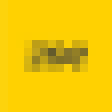
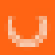
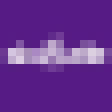

jack
--:--
work
-

ZOESoftware Engineer
- Backend services for the ZOE app: Kotlin/Spring Boot and Python/FastAPI on GCP.
- Owning features end to end with product, data and design.
-

Urban JungleFull-Stack Engineer
- Ship consumer insurance products: Angular/TypeScript front ends, Python/FastAPI back ends.
- Core engineer on Non-Standard Home; built the company's first claims management system.
-

SkuuudleSoftware Engineer
- Owned e-commerce scraping pipelines; a legacy refactor cut request volume by ~50%.
- Built a product matching system for pricing accuracy; up to 50 client reports a day.